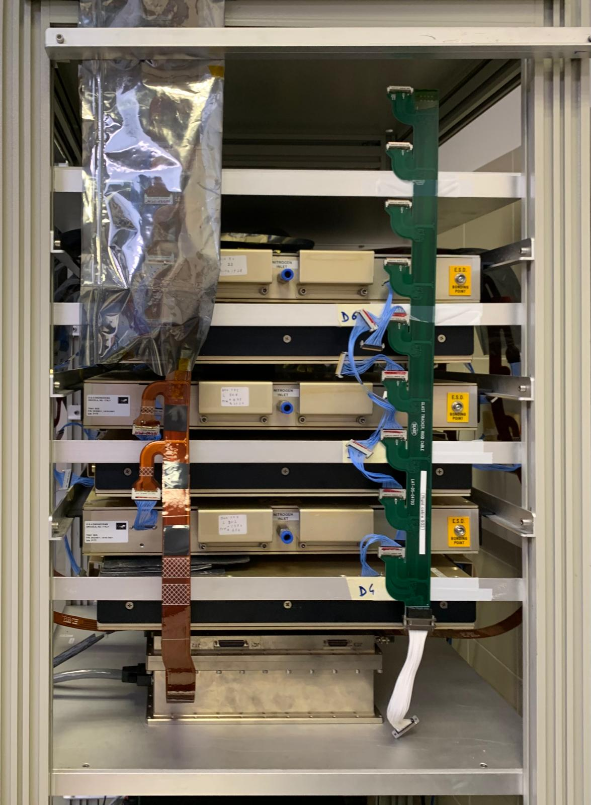
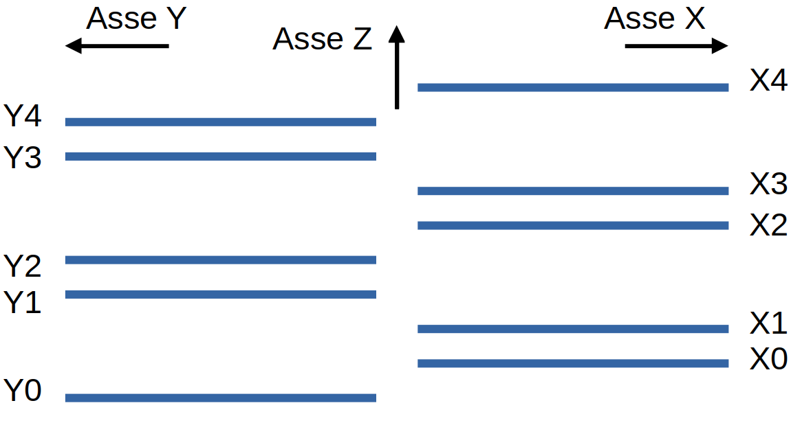

|
FERMI-GLAST TRACKER PROJECT
L'obiettivo di questo progetto è la misura della distribuzione angolare zenith ad azimuth dei raggi cosmici a partire dai dati ottenuti da 10 layer del tracker Fermi-GLast
|
The goal of this project is to measure the zenith and azimuth angle distribution of cosmic rays using the Fermi-Glast Tracker.
 
In these photos the tracker is portrayed and a faithful succession(not to scale!) along the z axis of the layers is also portrayed. The y-direction is exiting from the sheet, the x-direction is on the left.
TESTED ON:
DEPENDENCIES:
The code is made up of c++ libraries and macros called by an interface in python, root Cern libraries are used.
ROOT CERN VERSION >= 6.30.06
The used root version MUST BE >= 6.30.06 , this is due to a critical code breaking bug in the earlier versions: the Fit method from the TH1F class inherited from the TF1 class has a memory leak that leads to the slowing down of the code and ultimately leads to a crash of the PC.
PYTHON DEPENDENCIES: pyroot , loguru
To setup the package, firstly run in the Core folder:
$ cmake ..
Then run
$ make -jN
where N is the number of cores your PC has, one can alternatively just run on one core and do:
$ make
The aim of this project is to measure the zenith and azimuth angular distribution of Cosmic Rays using 10 layers of the Fermi-Glast Tracker, each layer contains 1536 strips that are ideally parallel to each other.
The layers are subdivided into two main groups XN and YN each composed of 5 layers, those that have strips parallel to a “x” direction and those who have strips parallel to a “y” direction that is perpendicular to the “x” direction. The used tracker returns info on the projection of the cosmic rays, an acquisition is triggered if for each of the vision XZ and YZ the following condition is satisfied:
A first abstraction of the data is made from hits to cluster by calling the macro CreateTree.cpp. A cluster is defined as a series of consecutive strips.
A tree is filled with instances of the class Evento, this object contains info on the hits, their respective layers; info on the position, dimension, initial strip of the clusters and a vector of flags.
The most important flag to account of is the first: this flag is set to False if there are in the event clusters adjacent to dead/muted/inefficient strips (strips that have not been activated) . The events that do not satisfy the flag amounts to about 21 %, those are kept but not used in further abstraction of the data.
The second abstraction of the phase corresponds to tracking, a track is defined as >= 3 up to 5 clusters (max 1 per layer) for which a linear fit returns a chisquare that is below a 0.95 p-value cut made from the nominal distribution of the chisquare at N dof. The actual studied object are the projections of the tracks rather than the tracks itself.
Potential projections of the tracks are identified using a tracking algorithm inspired to the Retina tracking algorithm, which checks for each layer of each vision clusters that are close by 0.5 cm from a straight line with value (m, q); the closest clusters is chosen. This is run on each cell a phase space of (m,q). The obtained info on the clusters and on the linear fit is inserted for each projection on instances of the object Track, all of those instances are then inserted into instances of the object EventoTrack and a root tree object is filled and inserted into a root file. The Object Track contains overloaded operator for > and ==, a Track is “greater” than another if it contains more clusters, a Track is “equal” to another if it contains more than 1 cluster in common. Those operators have been inserted to account for the fact that the tracking algorithm after identifying a track does not remove the points from the events, and so between adjacent phase space cells there may be identified projections that are actually the same one. It has been decided to not remove the points as that may actually introduce dangerous biases.
After performing identification of potential projections, systematic error due to relative shifts in X, Y , Z and rotations between the Layers are corrected, in this project the macros to calculate this corrections are not include. However, here we report the way those corrections have been calculated.
Firstly, the population of events selected is the one that satisfy the second Flag of the object Evento, which is a maximum of 1 cluster per layer. We assume that those contains projections of the tracks.
After chosing this populations, the shifts are calculated in the following order:
After all the corrections, errors on each layers are set to the standard deviation of the residuals after performing fits excluding clusters from the layer , and a cut is made at a nominal p-value of 0.95.
The package is structured in the following way: An interface is written in python language and firstly load using a rootlogon.C file the shared utils libraries written in C++. The Interface.py can be run with multiple options, the usual workflow is the following:
Multitracking analysis has not been included in this project, however one may easily do multitracking 2D analysis just by studying the distribution of angles between tracks, comparison can be made between the distributions of angles between projections in the same events and angles between projections from different events (to take away the correlation).
One could also study the vertex distributions in the projection planes.
Also one may introduce heavy materials such as lead to study muon decays, however this is much more ambitious than the previous ideas.